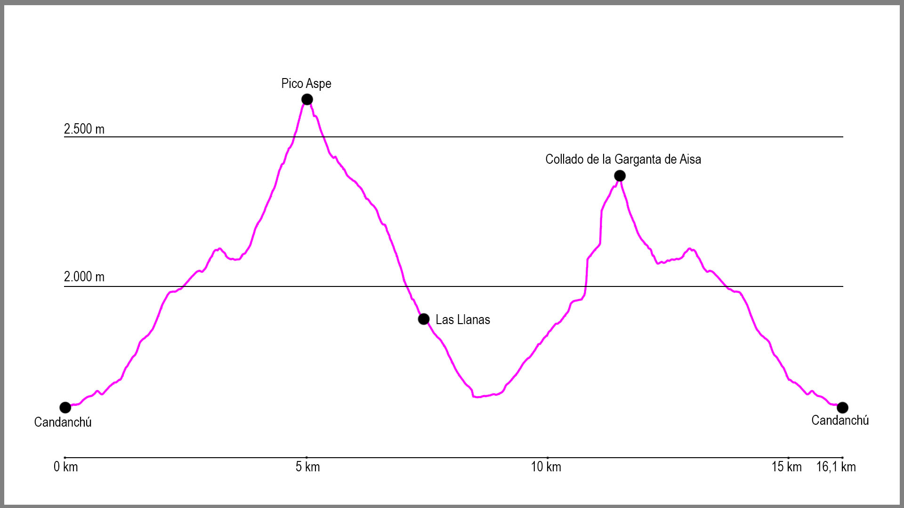

Desde el aparcamiento de Pista Grande en Candanchú, tomaremos la pista que sale en dirección oeste. Seguiremos en esta dirección hasta llegar a una bifurcación en la pista apenas pasados los 500 metros desde el inicio donde giraremos a nuestra izquierda. Pasados 200 metros en esta nueva dirección, torceremos a nuestra derecha para seguir la línea de dos telesquís en dirección suroeste. Cuando estos acaban a nuestra izquierda sale una pista de esquí que casi siempre en dirección sur asciende hacia el paso de Tortiellas. La subida es casi toda por zona de piedras y cada vez va cogiendo más inclinación hasta que una vez llegados al paso en sí, demos vista a la Garganta de Borau.
En este punto llegaremos a una pista de vehículos y la tomaremos a nuestra derecha para cruzar primero un pequeño barranco y llegar hasta una piedra que pone “Aspe” y que da paso a un gran llano. Atravesaremos esta zona y justo al fondo del plano sale un camino que nos hará ganar altura rápidamente. Justo cuando aparece el barranco de Tortiellas ante nostros el camino desciendo un pequeño balcón de roca para a mitad de él girar a la derecha y continuar por una zona algo expuesta hasta terminarla y descender hacia la base del Aspe.
Tras descender unos metros, el camino coge dirección oeste por debajo de una gran roca y al acabarla empieza la gran subida. No es excesivamente técnica, pero si tiene piso poco firme y cada vez es más empinada, justo hasta la llegada a la base del Tubo del Aspe. En este punto el camino gira 90 grados a nuestra izquierda y asciendo por la izquierda del tubo, hasta que a mitad del desnivel entra en él hasta el collado. Aquí volveremos a girar a la izquierda para afrontar el último tramo y llegar a la cima.
La bajada comienza por la misma parte de ascensión, pero una vez llegados al collado seguiremos rectos. A partir de aquí el camino desciende rápidamente hasta llegar al collado Occidental, donde gira de nuevo a la izquierda en dirección sur. Aquí comienza una zona con grietas y simas donde tendremos que tener especial cuidado, aunque el camino es bastante fácil de seguir debido al gran número de hitos que hay.
Poco a poco iremos perdiendo altura en dirección a Rigüelo hasta que pasemos la zona de Las Llanas y el camino se vuelva cada vez más descendente. Llegados a este punto, el sendero está cada vez más marcado y toma dirección oeste para después de llegar a la zona de hierba girar de nuevo hacia el sur. Seguiremos esta dirección hasta que lleguemos a un cartel que nos indicará “Collado de Rigüelo”. Tomaremos este sendero en dirección norte y seguiremos la GR hasta que esta vuelva a girar hacia el sur, momento en el cuál nosotros seguiremos por las faldas del Aspe en dirección norte. Aquí cogeremos en camino que va a la base de la Cresta de Los Murcielagos. Al principio es bastante cómodo, por zona de hierba, pero enseguida se vuelve una zona de pedrera y bloques de piedras hasta que divisamos el Paso de la Garganta de Aísa, un pequeño collado al fondo de toda la pedrera.
Desde este momento seguiremos en esta dirección para una vez llegados al collado bajar por la cara norte hasta llegar a la base del Aspe. Aquí divisaremos la zona de roca y los balcones que hemos pasado y nos dirigiremos a coger el camino por donde hemos iniciado la primera ascensión. Una vez en él, llegaremos a una pequeña subida que nos conducirá hasta otra repisa de roca, donde mantendremos altura y casi al final de la misma saldremos de ella para dar vista a la estación de esquí de Candanchú. Aquí descenderemos hacia un gran plano que tenemos enfrente nuestro y saldremos de él en dirección norte para llegar a las pistas de esquí.
En este momento tomaremos de referencia la pista para vehículos hasta que esta gira a la derecha y ante nosotros se abre el paso de Tortiellas, por donde descenderemos en dirección norte hasta que lleguemos a varios telesquís y divisemos de nuevo la pista de inicio de la ruta, la cuál esta vez cogeremos hacia nuestra derecha de forma descendente y nos llevará hasta el punto de inicio.
